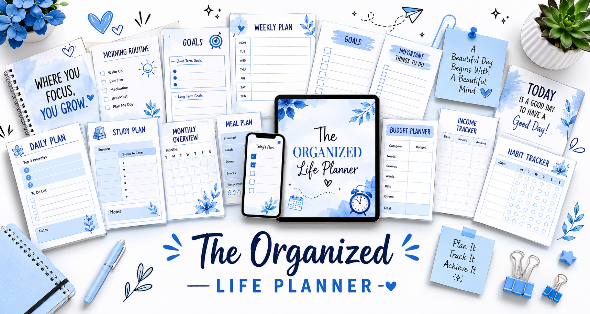

LifeSync Pro automatically creates profession-specific tasks for Students, Developers, Freelancers, Homemakers, Teachers and Professionals. Stay focused, build habits, track progress and achieve goals.
Profession Templates
Customizable Tasks
Productivity Tracking

Powerful tools designed to help you organize your daily workflow.
Automatically generated tasks based on your profession.
Track productivity, completion rate and performance.
Stay motivated and maintain consistency every day.
Monitor progress and achieve personal milestones.
Choose your profession and get personalized task templates.
Start using LifeSync Pro in minutes.
Join LifeSync Pro today and take control of your daily workflow.
Start Free Today